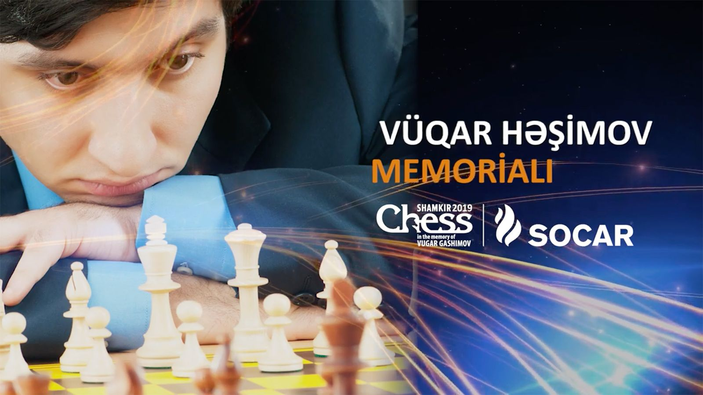

Artemiev Wins European Chess Championship
30/03/19 - After winning in Gibraltar, Vladislav Artemiev scored his
second big victory of the year at the European Individual Chess Championship in Skopje, North
Macedonia. The Russian GM edged out Nils Grandelius on tiebreak after both finished on 8.5/11.

Carlsen, Ding, Giri Top Field At Gashimov Memorial Chess
29/03/19 - The Gashimov Memorial starts this Sunday in Shamkir,
Azerbaijan. Magnus Carlsen, Ding Liren and Anish Giri are the top seeds in what will be a very
strong sixth edition. With Magnus Carlsen, Ding Liren, Anish Giri, Shakhriyar Mamedyarov and
Viswanathan Anand, the field includes five players from the current world's top six.

Carlsen and Giri campaign for racial equality
21/03/2019 – "Breaking a rule in chess to change behavior in life."
World Champion Magnus Carlsen and GM Anish Giri team up in a social campaign dubbed "Move for
Equality" in honour of the International Day for the Elimination of Racial Discrimination. The pair
shot a brief video in Oslo on Tuesday for the promotion.

AlphaZero is the new AI Champion
06/12/18 - There is a new champion among the chess engines. The updated
AlphaZero crushed Stockfish 8 in a new 1000-game match. AlphaZero also bested Stockfish in a series
of time-odds matches, soundly beating the traditional engine even at time odds of 10 to one. What's
really crazy is that AlphaZero acquired its chess knowledge in a measly 4 hours.